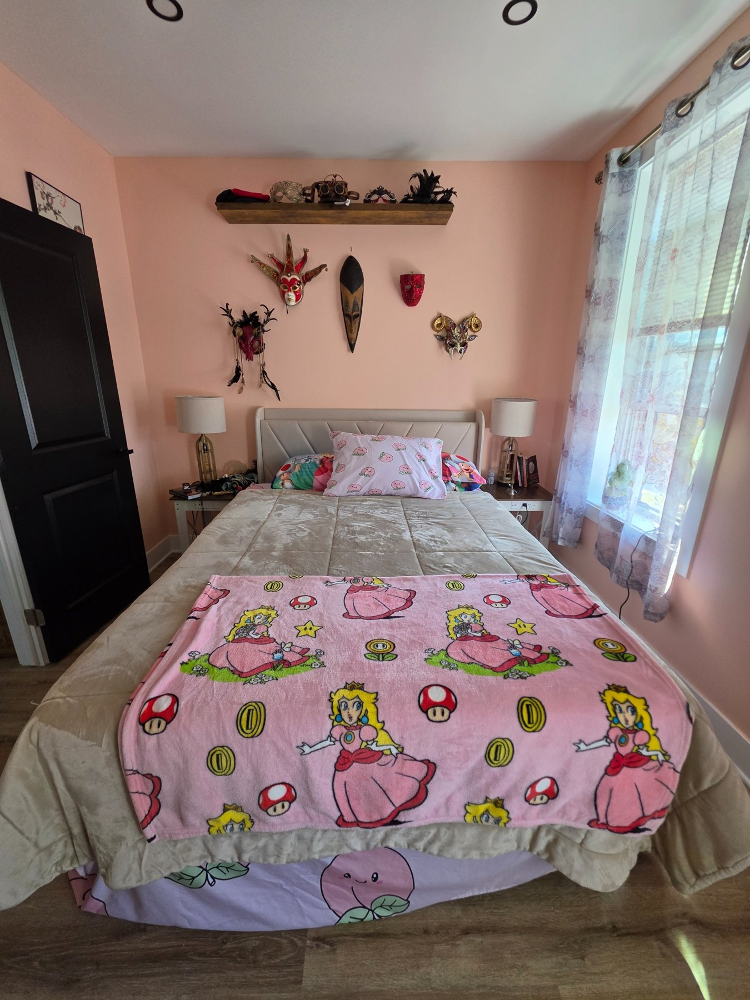
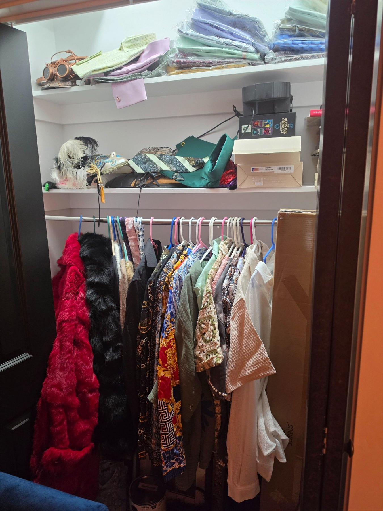
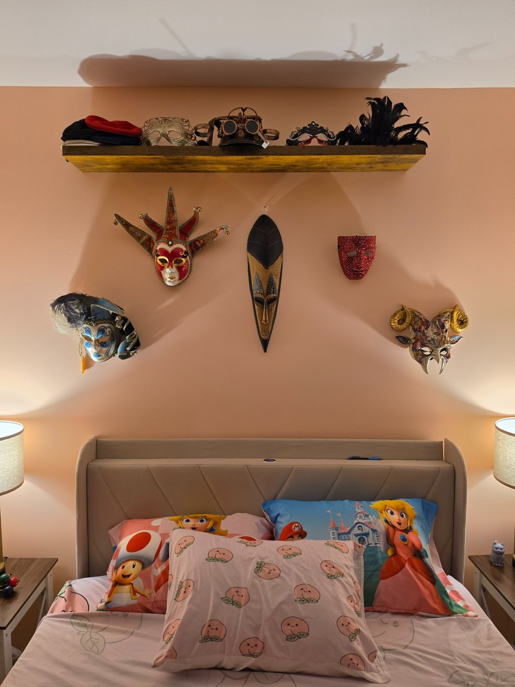
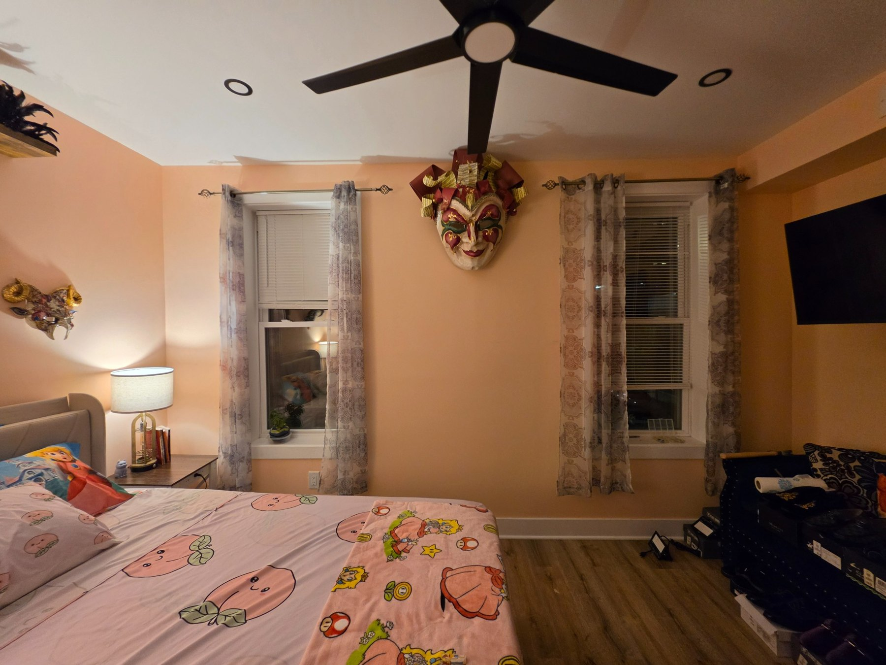
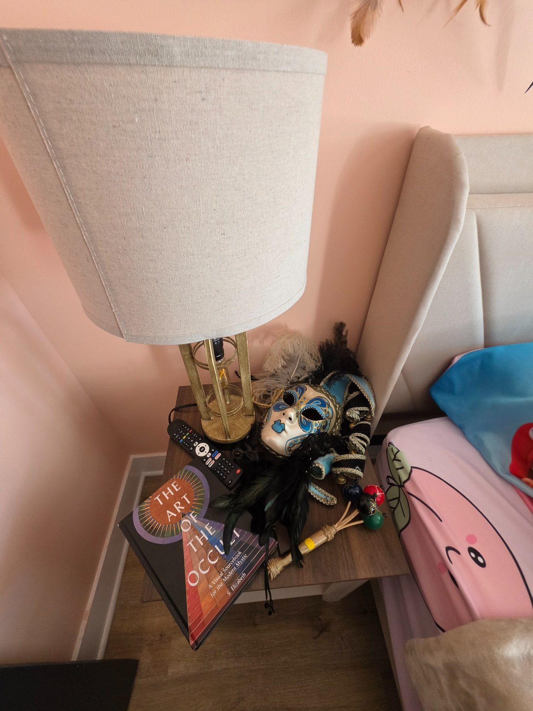
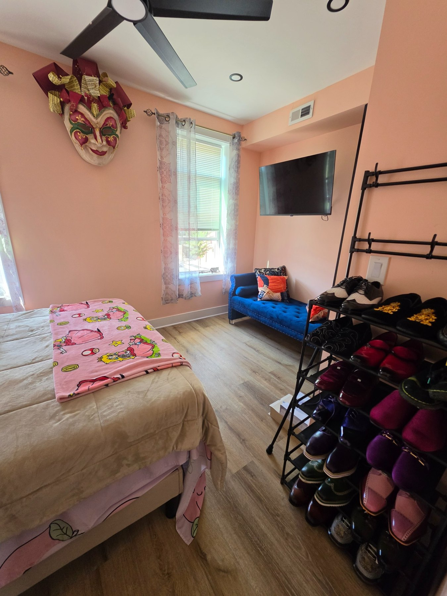

Queen Bed
A queen-size bed framed by the room's mask collection.

The Room of Transformation is devoted to masks and fashion: the ways we conceal, reveal, invent and reinvent ourselves. Throughout the room, wearable objects become part of the installation, turning personal style into a language of identity and change.
The walls are finished in warm peach tones, a color echoed playfully throughout the room. Peach-patterned sheets and a Princess Peach coverlet draw the theme into the bed, creating a bright counterpoint to the masks, feathers, metallic details and darker accessories displayed around the space.
Masks form the heart of the room. A changing collection appears above and around the bed, while a dramatic centerpiece hangs between the windows: a large mask from Masquerade in downtown Philadelphia. Other pieces range from Venetian-inspired forms and feathered masks to sculptural and ceremonial-looking designs.
Fashion continues beyond the walls. Hats, shoes, clothing and jewelry are displayed throughout the room, blurring the boundary between wardrobe and exhibition. A blue chaise lounge at the far end of the room provides an alternative place to sit, read, dress, or simply take in the collection.
A queen-size bed framed by the room's mask collection.
Fully online streaming television mounted in the room.
Individual room access code reset between guests.
Guest storage is available, with half of the closet reserved for the room's clothing display.
An additional sitting and dressing area at the end of the room.
Shared with guests staying in the Crystal Room.
Access to the common kitchen and shared areas of the house.





Swipe on mobile, use the arrows, or press the left and right arrow keys. Click any photo for fullscreen.